| Artist | Title | Original | Pressing | Format | Country | Label / Cat# | |
|---|---|---|---|---|---|---|---|
| ABBA | Gold (Greatest Hits) | 1992 | 2019 | 2× Vinyl LP, Compilation, Limited Edition, Reissue, Remastered, Stereo (180 Gram, Gold) | USA & Europe | Polydor – 574 785-4 / Polar – 00602557478549 | |
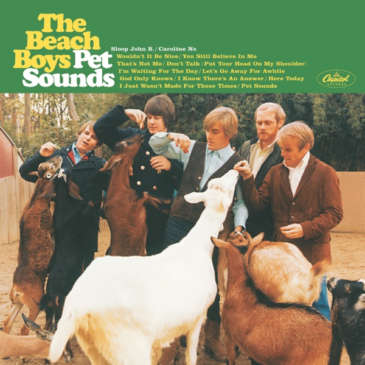 |
The Beach Boys | Pet Sounds | 1966 | 2016 | Vinyl LP, Album, Reissue, Stereo | US | UMe – B0024729-01 / Capitol Records – ST 2458 |
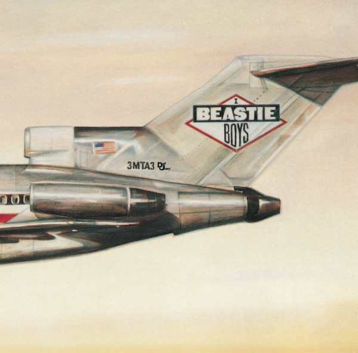 |
Beastie Boys | Licensed To Ill | 1986 | 2016 | Vinyl LP, Album, Reissue (Pallas Pressing, 30th Anniversary Edition, 180 Gram) | US | Def Jam Recordings – B0024720-01 / UMe – B0024720-01 |
| The Beatles | Rubber Soul | 1965 | 1972 | Vinyl LP, Album, Reissue, Stereo (Circle On Spine/Label; Red Title) | Germany | Odeon – 1C 062-04 115 / EMI Electrola – 1C 062-04 115 | |
| The Beatles | Revolver | 1966 | 2022 | Vinyl LP, Album, Reissue, Stereo (Remixed) | USA & Canada | Apple Records – 4559969 / Parlophone – PCS 7009 / Capitol Records – 4559969 / UMe – 4559969 | |
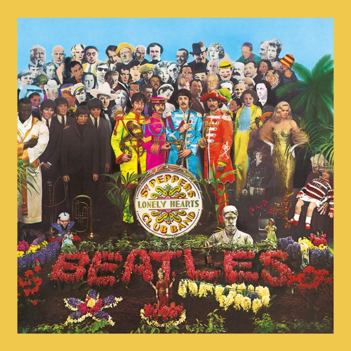 |
The Beatles | Sgt. Pepper's Lonely Hearts Club Band | 1967 | 2012 | Vinyl LP, Album, Reissue, Remastered, Stereo (180 Gram) | North America (inc Mexico) | Parlophone – 5099969942617 / Parlophone – PCS 7027 |
| The Beatles | 1962-1966 | 1973 | 1977 | 2× Vinyl LP, Compilation, Reissue (Presswell Pressing) | US | Capitol Records – SKBO-3403 / Capitol Records – SKBO 3403 | |
| The Beatles | 1967-1970 | 1973 | 1973 | 2× Vinyl LP, Compilation (Gatefold Sleeve) | US | Apple Records – SKBO 3404 | |
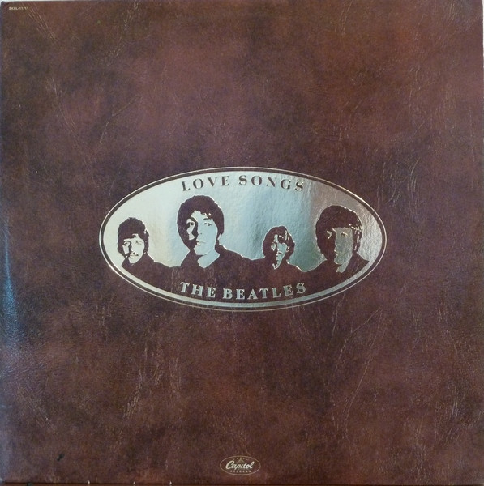 |
The Beatles | Love Songs | 1977 | 1977 | 2× Vinyl LP, Compilation, Stereo (Winchester Press) | US | Capitol Records – SKBL-11711 |
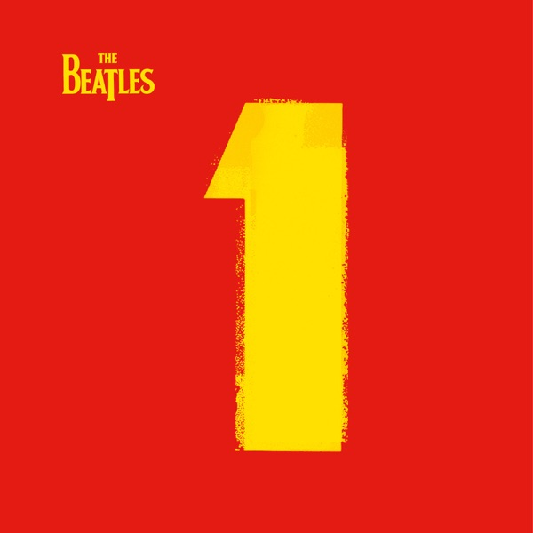 |
The Beatles | 1 | 2000 | 2015 | 2× Vinyl LP, Compilation, Reissue (180 Gram, Gatefold) | USA, Canada & Europe | Apple Records – 0602547567901 / Universal Music Group International – 0602547567901 |
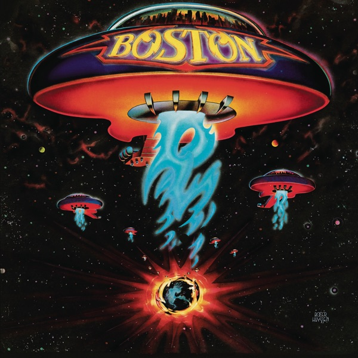 |
Boston | Boston | 1976 | 2016 | Vinyl LP, Album, Picture Disc, Reissue, Special Edition | US | Legacy – 5355471 / Epic – none |
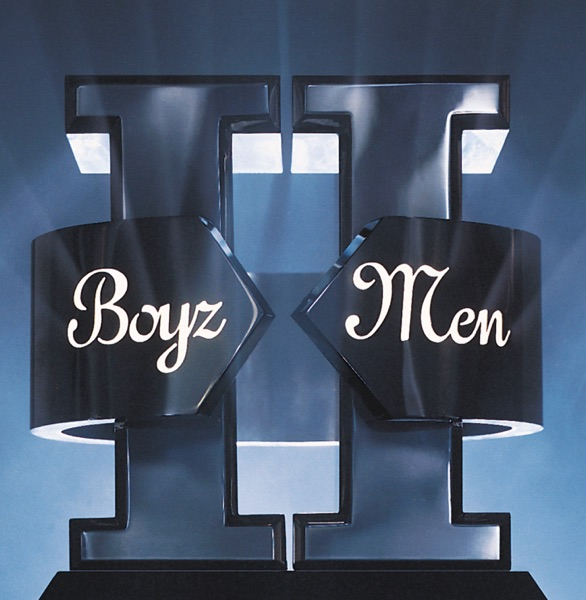 |
Boyz II Men | ll | 1994 | 2016 | 2× Vinyl LP, Album, Reissue | US | Motown – B0025089-01 |
| Boyz II Men | Legacy (The Greatest Hits Collection) | 2001 | 2020 | 2× Vinyl LP, Compilation, Limited Edition, Reissue (Purple Translucent) | US | Motown – B0032890-01 / UMe – B0032890-01 | |
| Creed | Greatest Hits | 2004 | 2022 | Vinyl LP / Vinyl LP, Single Sided, Etched / All Media Album, Compilation, Limited Edition, Reissue, Stereo (Blue Marble) | US | Craft Recordings – CR04979 | |
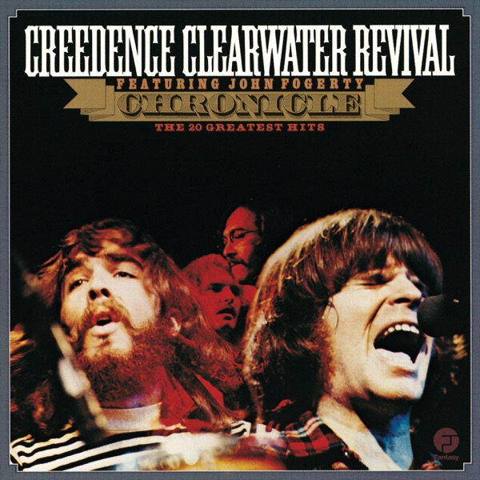 |
Creedence Clearwater Revival / John Fogerty | Chronicle - The 20 Greatest Hits | 1976 | 1976 | 2× Vinyl LP, Compilation (Terre Haute Pressing) | US | Fantasy – CCR-2 |
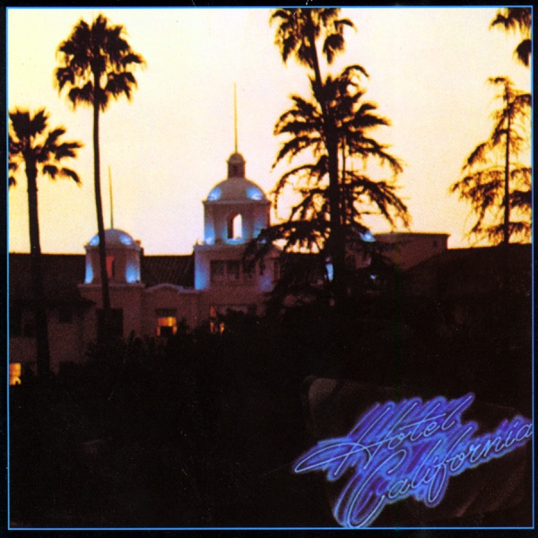 |
Eagles | Hotel California | 1976 | 2017 | Vinyl LP, Album, Reissue, Stereo (Gatefold, 180 Gram) | Europe | Asylum Records – RRM1-1084 / Asylum Records – 8122796161 |
| Kacey Musgraves | Deeper Well | 2024 | 2024 | Vinyl LP, Album, Stereo (Cream Transparent) | Worldwide | Interscope Records – 602455847041 / MCA Nashville – 602455847041 | |
| Kacey Musgraves | Middle Of Nowhere | 2026 | 2026 | Vinyl LP, Album, Limited Edition (Brown Translucent [Whiskey], Signed Insert) | US | Lost Highway – 602488275439 | |
| Lana Del Rey | Born To Die | 2012 | 2012 | Vinyl LP, Album, Reissue (Red Opaque Vinyl) | US | Interscope Records – B0016425-01 / Polydor – B0016425-01 | |
| Lana Del Rey | Ultraviolence | 2014 | 2021 | 2× Vinyl LP, Album, Reissue | US | Interscope Records – B0020950-01 / Polydor – B0020950-01 | |
| Lana Del Rey | Honeymoon | 2015 | 2025 | 2× Vinyl LP, Album, Reissue, Repress | USA & Europe | Polydor – 4750764 / Interscope Records – 4750764 | |
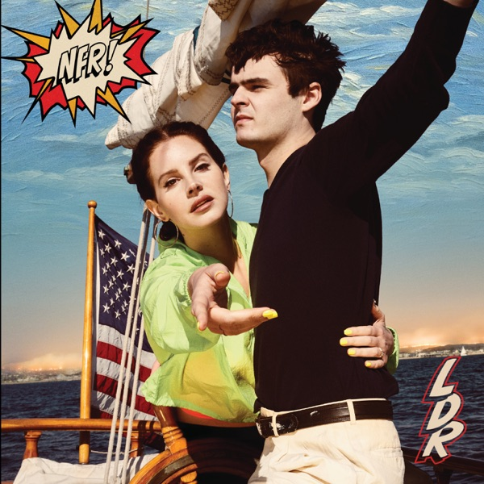 |
Lana Del Rey | NFR! | 2019 | 2022 | 2× Vinyl LP, Album, Reissue (Pallas Pressing) | USA & Europe | Polydor – 0840940 / Interscope Records – 0840940 / Polydor – B0030880-01 / Interscope Records – B0030880-01 / Polydor – 00602508409400 / Interscope Records – 00602508409400 |
| Lauren Daigle | How Can It Be (Deluxe Edition) | 2015 | 2020 | 2× Vinyl LP, Album, Deluxe Edition (180g) | US | Centricity Music – 9619210101 | |
| Lauren Daigle | Look Up Child | 2018 | 2018 | 2× Vinyl LP, 45 RPM, Album, Stereo (180g) | US | Centricity Music – 9619175721 | |
| Mariah Carey | Mariah Carey | 1990 | 2020 | Vinyl LP, Album, Reissue, Remastered | US | Columbia – 19439776361 / Legacy – 19439776361 | |
| Mariah Carey | #1 To Infinity | 2015 | 2015 | 2× Vinyl LP, Compilation (180 Gram) | US | Columbia – 88875102891 / Epic – 88875102891 / Legacy – 88875102891 | |
| Pink Floyd | Ummagumma | 1969 | 1970 | 2× Vinyl LP, Album, Reissue, Stereo (Gatefold) | US | Harvest – SKBB-388 | |
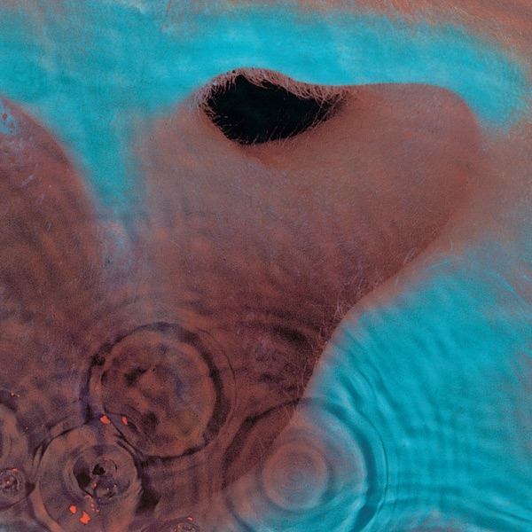 |
Pink Floyd | Meddle | 1971 | 1975 | Vinyl LP, Album, Reissue, Stereo (Gatefold) | US | Harvest – SMAS-832 |
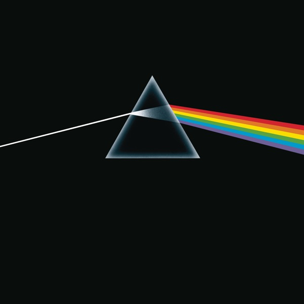 |
Pink Floyd | The Dark Side Of The Moon | 1973 | 2023 | Vinyl LP, Album, Reissue, Remastered, Stereo (50th Anniversary, 180 Gram) | Europe | Pink Floyd Records – PFR50LP1 / Pink Floyd Records – 5054197141478 |
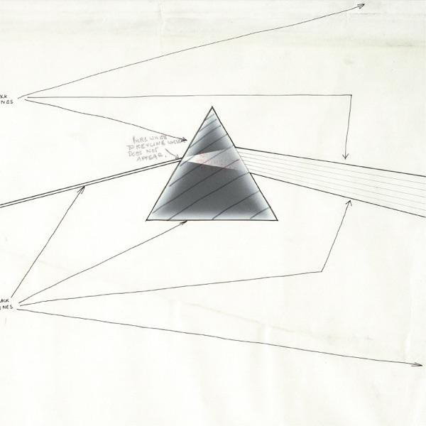 |
Pink Floyd | The Dark Side Of The Moon (Live At Wembley 1974) | 1974 | 2023 | Vinyl LP, Album, Stereo (180 Gram, 50th Anniversary) | US | Pink Floyd Records – PFR50LP2 / Pink Floyd Records – 19658713461 |
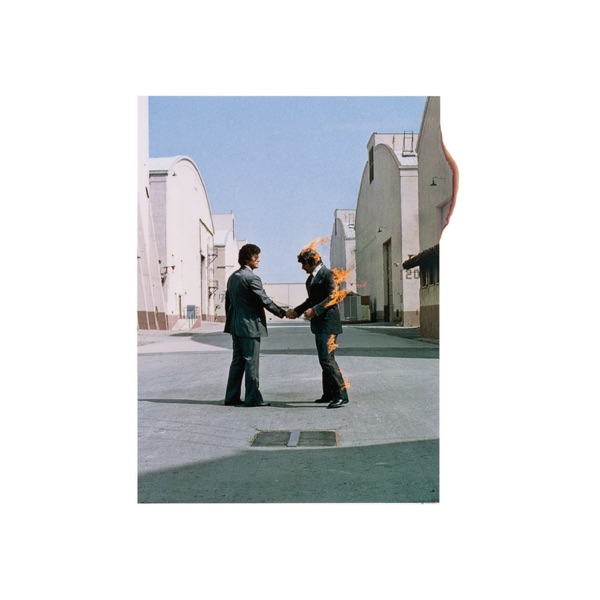 |
Pink Floyd | Wish You Were Here | 1975 | 2016 | Vinyl LP, Album, Reissue, Remastered, Stereo (180 Gram) | Europe | Pink Floyd Records – PFRLP9 / Pink Floyd Records – 5099902988016 |
 |
Pink Floyd | Wish You Were Here -50- | 1975 | 2025 | Blu-ray Album, Reissue, Remastered, Stereo, Quadraphonic, Multichannel (Dolby Atmos, PCM) | Worldwide | Columbia / Sony Music Entertainment / Pink Floyd Music |
 |
Pink Floyd | Wish You Were Here | 1975 | 1980 | Vinyl LP, Album, Reissue | US | Columbia – JC 33453 / Columbia – PC 33453 |
| Pink Floyd | Animals (2018 Remix) | 1977 | 2022 | Vinyl LP, Album, Reissue, Repress, Stereo (Gatefold, 180g) | Pink Floyd Records – PFRLP28 / Pink Floyd Records – 19075876851 | ||
| Pink Floyd | Animals | 1977 | 1977 | Vinyl LP, Album, Stereo (1st Press, Gatefold ) | US | Columbia – JC 34474 / Columbia – 34474 | |
| Pink Floyd | The Wall | 1979 | 2018 | 2× Vinyl LP, Album, Reissue, Remastered, Repress (180 Gram, Gatefold) | US | Pink Floyd Records – PFRLP11 / Pink Floyd Records – 88875184281 | |
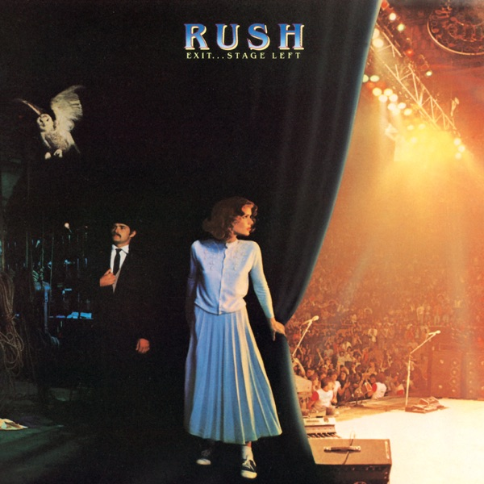 |
Rush | Exit...Stage Left | 1981 | 1981 | 2× Vinyl LP, Album, Repress, Stereo (Carrollton Pressing) | US | Mercury – SRM-2-7001 |